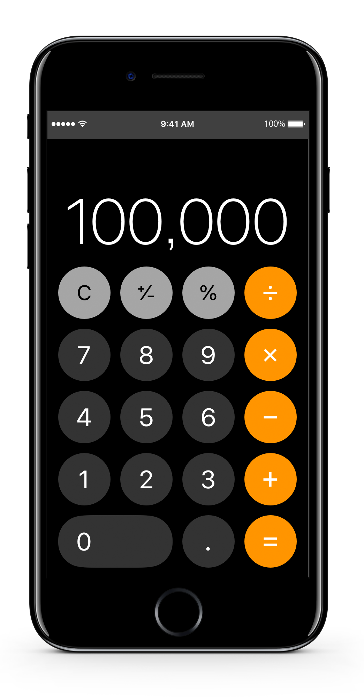

今の採用、当たっていますか？
最適人材の発掘と獲得を実現する
全研本社の採用オウンドメディアで
進める効率リクルーティング
採用オウンドメディアは、自社の認知度を上げ、採用ミスマッチを減らし、
直接採用を増やす効果があります。
必要性は感じていても、何から手を付けたらよいか？
どうすれば求める人材に見てもらえるメディアになるのか？
と足踏みされている担当者様も多いのではないでしょうか。重要ポイントは「魅力的なコンテンツ」「継続的な運用」「キーワード選定」です。
全研本社が制作・運用、採用効果の最大化を全面サポートします。
御社の必要とする人材に当たる採用オウンドメディアを、そろそろ始めませんか？
その悩み、突破しませんか？
-
膨らむ採用コストを
低減化したいダイレクトリクルーティングもリファラル採用も始めたいがコストが気になっている。
-

ライバル企業との
差別化ができない他社と同じような求人内容の掲載になりがちで、求める層の人材が集められていない。
-

募集の外部依存で
費用が嵩んでいる採用は求人広告やエージェント頼み。毎回費用がかかる割に手応えや成果につながらない。
-
離職率が高い
採用まで行き着いても、早期離職者が絶えず、採用活動が堂々巡りになっている。
採用オウンドメディアが、
求職者の「決定」をうながす
しかし、それ以上に重要となる求職者と企業の相互理解を深めることのできる場所となります。
・求職者がなりたい自分になれるのか？
・それを提供できる企業なのか？
・求めている人物像と求職者がマッチしているのか？
採用活動に採用オウンドメディアを加えることで、共感が企業選択を後押しし、深く理解した上での意思決定を促します。マッチング精度の向上、離職率の低減が見込めます。
採用オウンドメディアを軸にすれば、リファラル採用やダイレクトリクルーティングも有効に機能していくでしょう。
Web上の求人広報として、「採用の中心」に採用オウンドメディアを置く価値は大きいのです。
成功事例で分かる
採用オウンドメディアの効果
Webディレクターになるには
Web制作関連の採用オウンドメディア
300
% 向上今まで求人メディアやエージェントに頼った採用活動を行っておりましたが、
採用オウンドメディアからのエントリーが増えました。
その結果、採用にかかるコストをカットすることができました。
また新卒採用でも採用オウンドメディアを見てのエントリーや質問が多く、
応募意欲の高い求職者が増えています。
新卒・中途に関わらず、採用オウンドメディアによって、自社の欲しい人材が集まるようになりました。
採用オウンドメディア成功のノウハウを
詳しく知りたい方はこちら